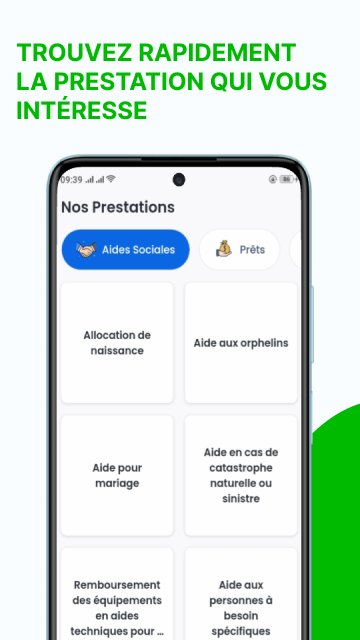
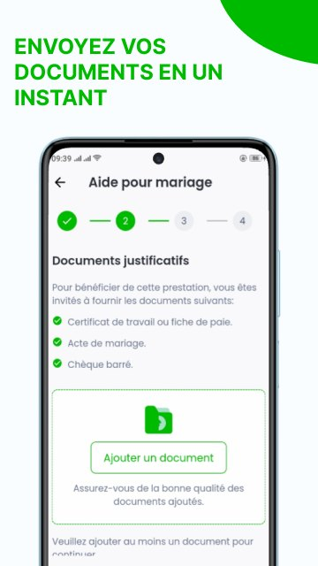
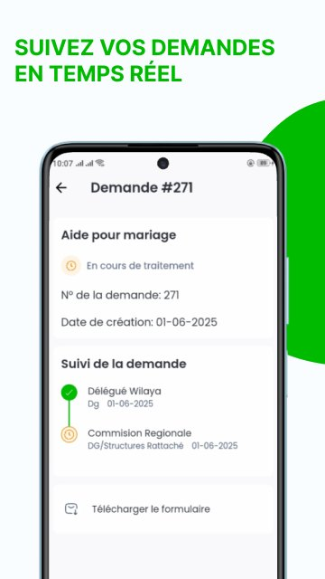
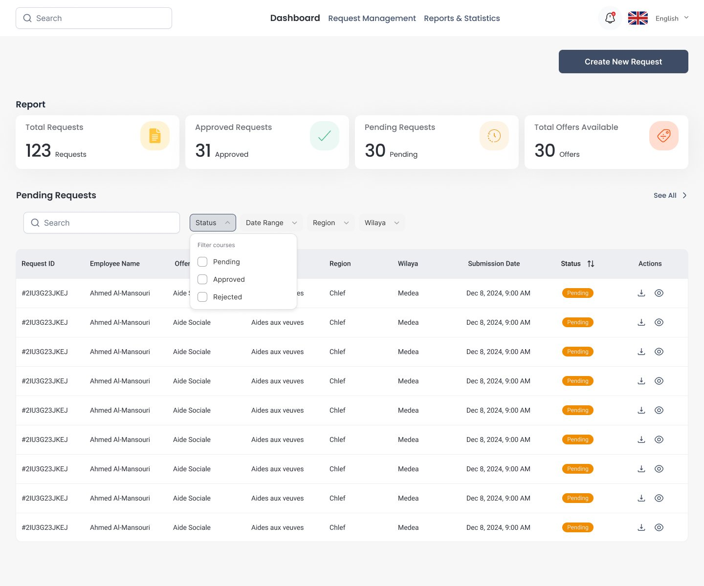
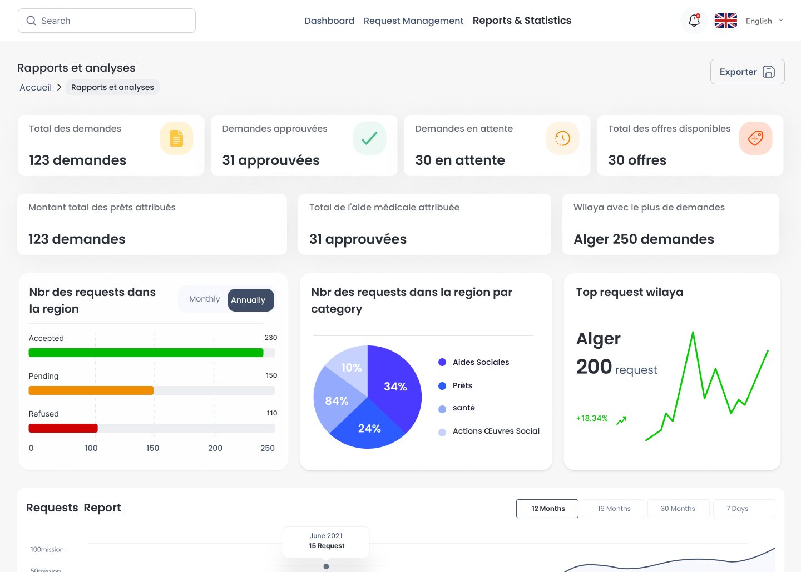

Requests lived on paper
Employees asked for benefits through paper forms. Requests were slow, and nobody could easily see where theirs stood or what was missing.
Four surfaces, one system
Mobile app
Submit benefit requests, track their status and manage beneficiaries.
Website
The committee's public site, with news, offers and information for employees.
Worker dashboard
One place to follow offers and incoming requests.
Admin panel
Manage users and content.
The employee journey, in three screens



For the committee team


Summary first. Four totals show the workload before any table.
Filter, don't scroll. Status, date, region and wilaya filters narrow the list fast.
Status at a glance. Colored chips for pending, approved and rejected.


My role
- User flows and high-fidelity UI for all four surfaces
- Design foundations and a documented component library
- Developer hand-off, working with the frontend team who brought the animations to life
Live and adopted
on Google Play.
from employees using the app.
Requests now go through the app, with a status anyone can check.
TakeawayReplacing paper isn't about screens. It's about never having to ask "where is my request?" again.